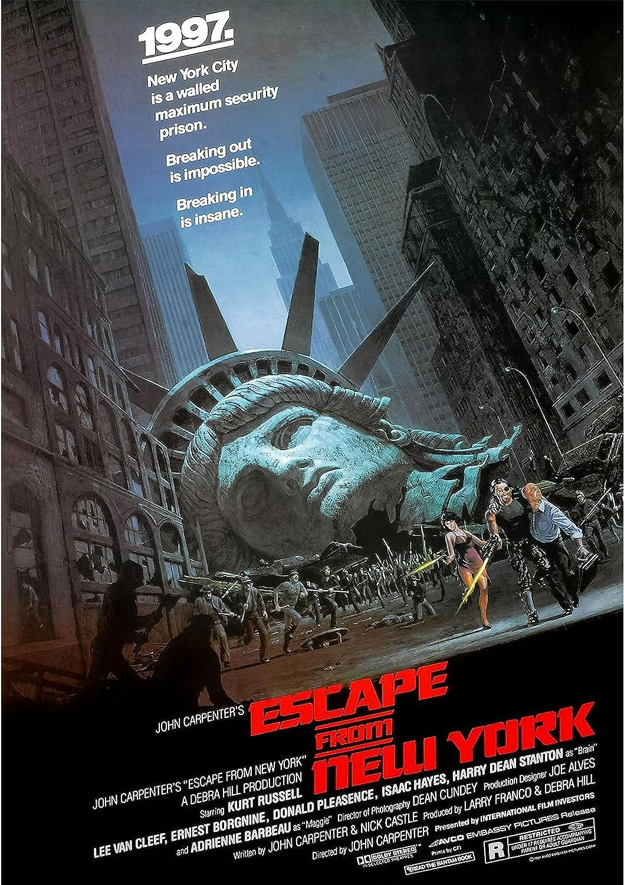
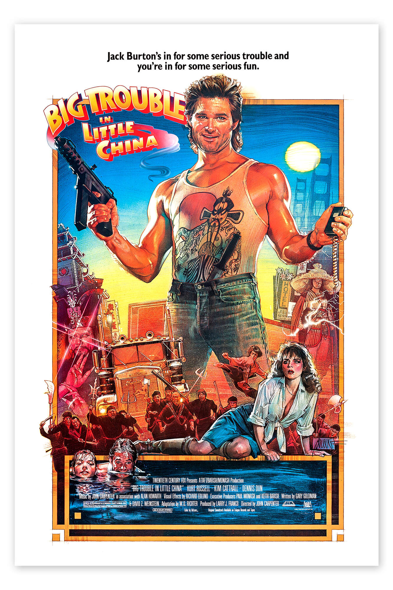
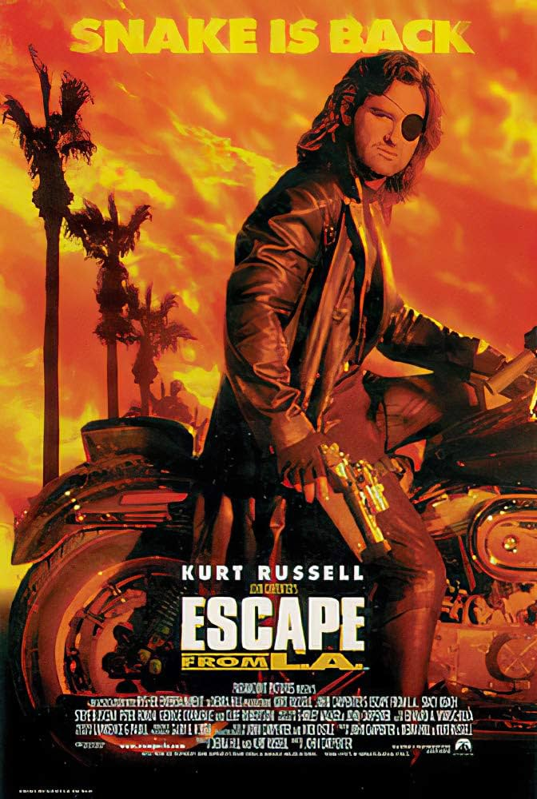

John Carpenter
La cosa (El enigma de otro mundo)

Título original: The Thing
Año: 1982
Duración: 1h 49min
Puntuación: 8,2 / 10
Sinopsis: Un equipo de investigadores en la Antártida es perseguido por un alien que cambia de forma y asume la apariencia de sus víctimas.
Estrellas: Kurt Russell, Wilford Brimley, Keith David
Anécdota: Las palabras pronunciadas por el piloto al entrar en el campamento son realmente comprensibles para los noruegos. Aunque el noruego roto, la línea dice: "Se til helvete og kom dere vekk. No es una bicicleta, ¡es una gran cosa! Esto imite una bicicleta, ¡no es tan increíble! ¡¡¡¡¡¡VEN ESOS IDIOTAS!!" Esto se traduce en: "¡Fuera de ahí, carajo! ¡Eso no es un perro, es algún tipo de cosa! Es imitar a un perro, ¡no es real! ¡¡¡¡ALÉJATE IDIOTAS!!"
Premios: 1 premio ganado y 5 nominaciones en total.
1997: Rescate en Nueva York

Título original: Escape from New York
Año: 1981
Duración: 1h 39min
Puntuación: 7,1 / 10
Sinopsis: En 1997, cuando el presidente de Estados Unidos es secuestrado y llevado a Manhattan, convertida en una gigantesca prisión de máxima seguridad, un ladrón de bancos es enviado para rescatarlo.
Estrellas: Kurt Russell, Lee Van Cleef, Ernest Borgnine
Anécdota: Kurt Russell ha declarado que esta es su favorita de todas sus películas, y Snake Plissken es su favorito de sus personajes.
Premios: 6 nominaciones en total.
Golpe en la pequeña China

Título original: Big Trouble in Little China
Año: 1986
Duración: 1h 39min
Puntuación: 7,2 / 10
Sinopsis: Un camionero áspero ayuda a rescatar a la prometida de su amigo de un antiguo hechicero en una batalla sobrenatural debajo de Chinatown.
Estrellas: Kurt Russell, Kim Cattrall, Dennis Dun
Anécdota: Kurt Russell confesó en el comentario del DVD que tenía miedo de protagonizar la película porque había hecho una serie de películas que se deshicieron en taquilla. Cuando preguntó a John Carpenter al respecto, le dijo a Kurt que a él no le importaba, solo quería hacer la película con él.
Premios: 1 premio ganado y 1 nominación en total.
2013: Rescate en L.A.

Título original: Escape from L.A.
Año: 1996
Duración: 1h 41min
Puntuación: 5,7 / 10
Sinopsis: Snake Plissken es llamado nuevamente por el gobierno de los Estados Unidos para recuperar un posible dispositivo del fin del mundo desde Los Ángeles.
Estrellas: Kurt Russell, Steve Buscemi, Stacy Keach
Anécdota: Kurt Russell es el único crédito de escritura.
Premios: 3 nominaciones en total.